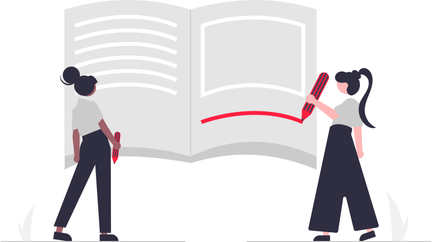

Idioms #2

“Michelle and Julia are on the same page. They both understand and agree to the plan."
-
Cut to the chase:
To get to the main point or most important part of something.
"Can you please cut to the chase? I don't have much time."
-
Keep your cards close to your chest:
To keep your plans or intentions secret.
"I'm not sure what his plan is, but he's keeping his cards close to his chest for now."
-
Face the music:To accept the consequences of your actions.
"After getting caught cheating on the exam, John knew he would have to face the music and accept the consequences."
-
On the same page:
This means that everyone involved in a situation or conversation is in agreement or
understands the situation in the same way.
"We're all on the same page about the new project, so let's get started."
-
See eye to eye:To have the same opinion or viewpoint as someone else.
"I'm glad we were able to see eye to eye on the budget for this event."
-
Rain on someone's parade:To ruin someone's plans or good mood.
"Don't rain on my parade, Sarah. I'm excited about my new job."
-
Pull out all the stops:To do everything you can to achieve something.
"If we want to win this competition, we need to pull out all the stops and give it our best effort."
-
Turn over a new leaf:To change your behavior or habits for the better.
"I've decided to turn over a new leaf and start going to the gym every day."
-
Cut corners:To do something in a cheaper or quicker way, often at the expense of quality.
"I'm trying to save money, so I'm cutting corners by doing my own car repairs instead of going to a mechanic."
-
Hit the nail on the head:To do or say something that is exactly right or accurate.
"You really hit the nail on the head with that suggestion. It's exactly what we needed."
Extra practice:
1. Write two sentences using each of the idioms listed above. 2. Draw some pictures to illustrate the idioms above.